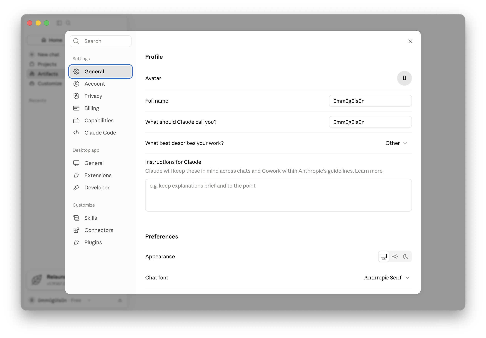
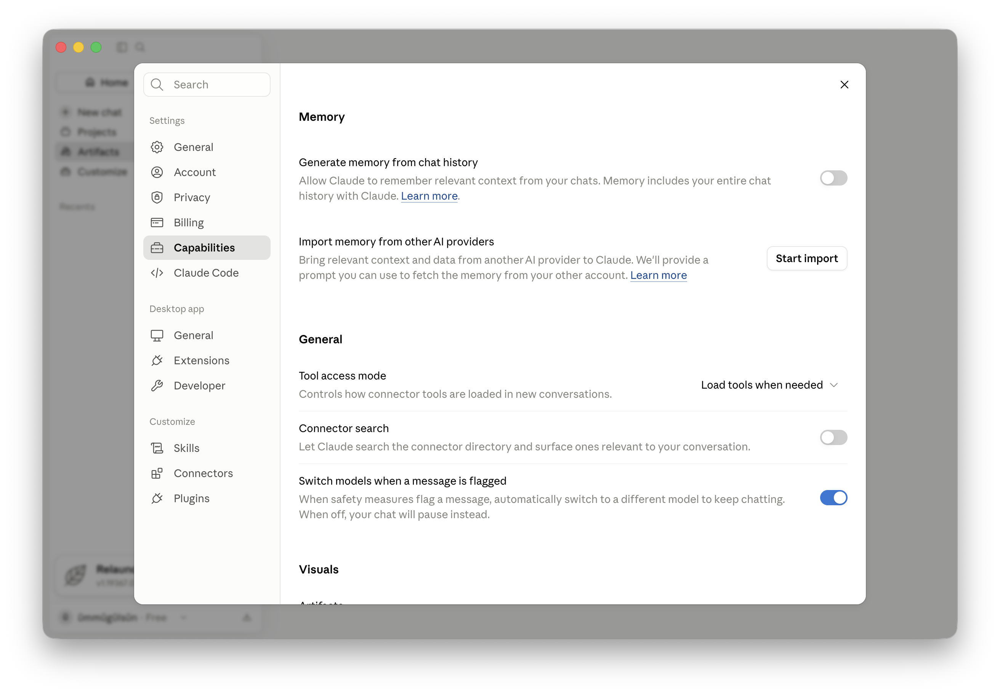
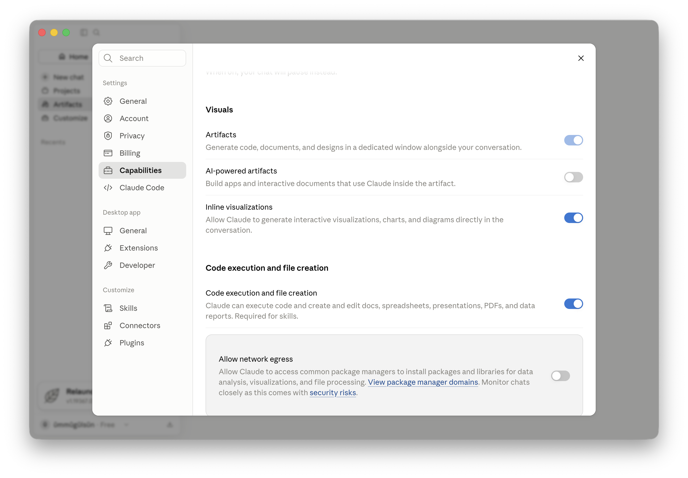

1. What is Claude, and which version/model am I using?
Claude is a next-generation AI assistant developed by Anthropic. In our Apollo workspace, we have access to the Enterprise subscription. The default model in the input selector is **Sonnet 5 Medium** (best for speed and daily work). We also have access to **Sonnet 5 Mini** (very fast) and **Opus 4.6** (most advanced reasoning model, supporting "Thinking" mode for complex tasks).
2. What kinds of tasks is Claude best at—writing, analysis, coding, research, or brainstorming?
Claude excels at:
- Writing: Highly natural, professional writing matched to our brand voice.
- Analysis: Auditing energy data, reading spreadsheets, and extracting details from long contracts.
- Brainstorming: Drafting customer proposals and energy transition strategies.
- Coding: Writing automation scripts (in the Code tab).
- Note: For live web research, use the research plugins or the Cowork agent features.
3. How should I phrase prompts to get specific, useful answers?
Give Claude a clear role, provide detailed background, set constraints, and specify the output format (the ICC Formula). Separate different blocks of data using XML tags (e.g. <document>...</document>). This helps Claude understand where instructions stop and data begins.
4. How do I provide context, files, or examples for Claude to work with?
Upload files (PDF, CSV, TXT, images) using the + button for temporary single chats. For permanent team access, upload files under the Files tab inside a Project.
Pro Tip: Provide 1 or 2 examples of your desired format (few-shot prompting) in your prompt. This is the single most effective way to guarantee the correct output style.
5. How can I ask Claude to revise, shorten, expand, or change the tone of an answer?
You don't need to rewrite your prompt. Simply reply to the output with commands like "Shorten this to 2 paragraphs," "Rewrite this in an encouraging tone," or "Convert this to a table." You can also hit the ↑ Up Arrow key on your keyboard to edit your previous message.
6. How do I verify Claude's factual claims and citations?
While Claude is highly accurate, it can occasionally hallucinate. Always ask Claude: "Show me the specific quote or section from the document that supports this claim." For critical facts or statistics, manually cross-check the referenced section in the source file.
7. What are Claude's limitations with current information, calculations, and hallucinations?
- Current Info: Standard Claude is limited by its training data. For up-to-date web info (e.g. current energy rates), toggle the Web search checkbox in the + menu.
- Calculations: Claude can make mistakes with complex math. Ask it to "write and run Python code" to perform calculations, or write "verify your math step-by-step."
- Hallucinations: Prevent them by adding a constraint: "If the answer is not present in the files, state 'I do not know.'"
7b. What are plugins? Which plugins are interesting for Claude?
Plugins are tools that expand Claude's functions beyond text processing. In our directory, interesting plugins include:
- PDF Viewer: View, annotate, and sign contracts live in an interactive window.
- Productivity: Manage tasks, plan your day, and build project memories.
- Enterprise Search: Search across all company tools (email, chat, docs).
- Data: Run SQL, explore datasets, and generate visualizations/dashboards.
- Legal & Finance: Automate NDA reviews, compliance triage, and account reconciliations.
8. How do Projects, saved instructions, or custom preferences work in Claude?
Projects are isolated workspaces. They contain
Project Instructions (custom guidelines that apply to all chats in the project) and
Project Files. Instead of pasting guidelines every time you start a new chat, projects automate the context for you.
Custom Preferences: You can set global instructions under
Settings > General > Instructions for Claude which apply to all chats.

8b. What is a Team Project and how does it work?
A Team Project is a project shared with either the entire workspace or specific team members. Multiple team members can start chats inside it, view each other's chats, and add files. A Private Project is only visible to you.
8c. Can I use the company Claude account for personal tasks? Which accounts should I use?
No. Apollo's corporate account must only be used for work-related tasks. You should avoid asking personal questions or uploading personal documents to the corporate account. For personal use, please use a separate personal free account.
9. What privacy settings apply to my chats and uploaded documents?
Under Apollo's Enterprise plan, Anthropic enforces Zero Data Retention (ZDR). Your chats, prompts, and uploaded documents are encrypted and never used to train Anthropic's models.
Admin Visibility: Primary Owners (workspace admins) can export organization-wide data (including full chat history) for compliance and auditing. Therefore, treat your corporate account as a monitored work system and avoid posting personal information. However, there is no real-time message surveillance screen, allowing you to collaborate freely on work tasks.
10. Do I need to manually anonymize candidate CVs before uploading them to Claude?
On our Enterprise Plan, NO. Because Apollo Solutions uses the Claude Enterprise plan with Zero Data Retention (ZDR), Anthropic never trains models on your uploads and processes data in a secure, encrypted environment. Recruiters can upload candidate resumes directly to restricted project workspaces without manual redaction.
Exception: You must still never upload passwords, credit card numbers, or social security numbers. On personal free accounts, manual anonymization is still mandatory.
11. How many files can I upload, and does it have a memory?
- File Limit: You can upload up to 5-10 files per message (each up to 10-32MB). In Projects, you can store up to 100+ files as reference material.
- Memory: Claude remembers everything said within the current chat thread (up to 200,000 tokens, which is ~150,000 words). Memory features can be configured in settings.

12. Can Claude run code or build interactive apps? How do I control these?
Yes. Under
Settings > Capabilities, you can configure these options:
- Code execution: Allows Claude to write and run Python scripts locally in a secure sandbox to verify complex math or clean datasets.
- AI-powered artifacts: Allows Claude to build interactive web apps, dashboards, or SVGs that render in the side panel.
